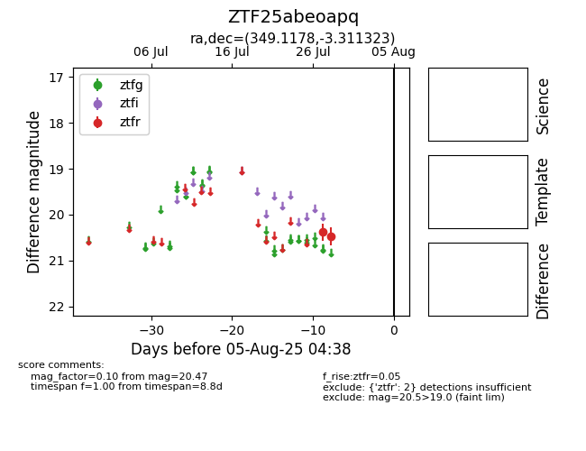

Target ZTF25abeoapq at 2025-08-05 04:38, see:
FINK: fink-portal.org/ZTF25abeoapq
Lasair: lasair-ztf.lsst.ac.uk/objects/ZTF25abeoapq
ALeRCE: alerce.online/object/ZTF25abeoapq
alt names
ZTF25abeoapq (ztf,fink)
coordinates:
equatorial (ra, dec) = (349.1178,-3.31132)
galactic (l, b) = (75.1970,-57.10283)
photometry
last ztfr=20.47
2 ztfr detections
